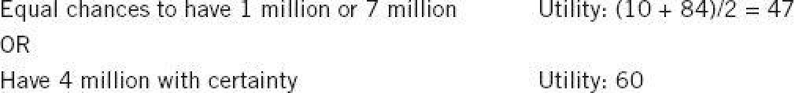

One day in the early 1970s, Amos handed me a mimeographed essay by a Swiss economist named Bruno Frey, which discussed the psychological assumptions of economic theory. I vividly remember the color of the cover: dark red. Bruno Frey barely recalls writing the piece, but I can still recite its first sentence: “The agent of economic theory is rational, selfish, and his tastes do not change.”
I was astonished. My economist colleagues worked in the building next door, but I had not appreciated the profound difference between our intellectual worlds. To a psychologist, it is self-evident that people are neither fully rational nor completely selfish, and that their tastes are anything but stable. Our two disciplines seemed to be studying different species, which the behavioral economist Richard Thaler later dubbed Econs and Humans.
Unlike Econs, the Humans that psychologists know have a System 1. Their view of the world is limited by the information that is available at a given moment (WYSIATI), and therefore they cannot be as consistent and logical as Econs. They are sometimes generous and often willing to contribute to the group to which they are attached. And they often have little idea of what they will like next year or even tomorrow. Here was an opportunity for an interesting conversation across the boundaries of the disciplines. I did not anticipate that my career would be defined by that conversation.
Soon after he showed me Frey’s article, Amos suggested that we make the study of decision making our next project. I knew next to nothing about the topic, but Amos was an expert and a star of the field, and he
I soon learned that our subject matter would be people’s attitudes to risky options and that we would seek to answer a specific question: What rules govern people’s choices between different simple gambles and between gambles and sure things?
Simple gambles (such as “40% chance to win $300”) are to students of decision making what the fruit fly is to geneticists. Choices between such gambles provide a simple model that shares important features with the more complex decisions that researchers actually aim to understand. Gambles represent the fact that the consequences of choices are never certain. Even ostensibly sure outcomes are uncertain: when you sign the contract to buy an apartment, you do not know the price at which you later may have to sell it, nor do you know that your neighbor’s son will soon take up the tuba. Every significant choice we make in life comes with some uncertainty—which is why students of decision making hope that some of the lessons learned in the model situation will be applicable to more interesting everyday problems. But of course the main reason that decision theorists study simple gambles is that this is what other decision theorists do.
The field had a theory, expected utility theory, which was the foundation of the rational-agent model and is to this day the most important theory in the social sciences. Expected utility theory was not intended as a psychological model; it was a logic of choice, based on elementary rules (axioms) of rationality. Consider this example:
If you prefer an apple to a banana,
then
you also prefer a 10% chance to win an apple to a 10% chance to win a banana.
The apple and the banana stand for any objects of choice (including gambles), and the 10% chance stands for any probability. The mathematician John von Neumann, one of the giant intellectual figures of the twentieth century, and the economist Oskar Morgenstern had derived their theory of rational choice between gambles from a few axioms. Economists adopted expected utility theory in a dual role: as a logic that prescribes how decisions should be made, and as a description of how Econs make choices. Amos and I were psychologists, however, and we set out to understand how Humans actually make risky choices, without assuming anything about their rationality.
We maintained our routine of spending many hours each day in conversation, sometimes in our offices, sometimes at restaurants, often on long walks through the quiet streets of beautiful Jerusalem. As we had done when we studied judgment, we engaged in a careful examination of our own intuitive preferences. We spent our time inventing simple decision problems and asking ourselves how we would choose. For example:
Which do you prefer?
A. Toss a coin. If it comes up heads you win $100, and if it comes up tails you win nothing.
B. Get $46 for sure.
We were not trying to figure out the mos BineithWe t rational or advantageous choice; we wanted to find the intuitive choice, the one that appeared immediately tempting. We almost always selected the same option. In this example, both of us would have picked the sure thing, and you probably would do the same. When we confidently agreed on a choice, we believed—almost always correctly, as it turned out—that most people would share our preference, and we moved on as if we had solid evidence. We knew, of course, that we would need to verify our hunches later, but by playing the roles of both experimenters and subjects we were able to move quickly.
Five years after we began our study of gambles, we finally completed an essay that we titled “Prospect Theory: An Analysis of Decision under Risk.” Our theory was closely modeled on utility theory but departed from it in fundamental ways. Most important, our model was purely descriptive, and its goal was to document and explain systematic violations of the axioms of rationality in choices between gambles. We submitted our essay to Econometrica, a journal that publishes significant theoretical articles in economics and in decision theory. The choice of venue turned out to be important; if we had published the identical paper in a psychological journal, it would likely have had little impact on economics. However, our decision was not guided by a wish to influence economics; Econometrica just happened to be where the best papers on decision making had been published in the past, and we were aspiring to be in that company. In this choice as in many others, we were lucky. Prospect theory turned out to be the most significant work we ever did, and our article is among the most often cited in the social sciences. Two years later, we published in Science an account of framing effects: the large changes of preferences that are sometimes caused by inconsequential variations in the wording of a choice problem.
During the first five years we spent looking at how people make decisions, we established a dozen facts about choices between risky options. Several of these facts were in flat contradiction to expected utility theory. Some had been observed before, a few were new. Then we constructed a theory that modified expected utility theory just enough to explain our collection of observations. That was prospect theory.
Our approach to the problem was in the spirit of a field of psychology called psychophysics, which was founded and named by the German psychologist and mystic Gustav Fechner (1801–1887). Fechner was obsessed with the relation of mind and matter. On one side there is a physical quantity that can vary, such as the energy of a light, the frequency of a tone, or an amount of money. On the other side there is a subjective experience of brightness, pitch, or value. Mysteriously, variations of the physical quantity cause variations in the intensity or quality of the subjective experience. Fechner’s project was to find the psychophysical laws that relate the subjective quantity in the observer’s mind to the objective quantity in the material world. He proposed that for many dimensions, the function is logarithmic—which simply means that an increase of stimulus intensity by a given factor (say, times 1.5 or times 10) always yields the same increment on the psychological scale. If raising the energy of the sound from 10 to 100 units of physical energy increases psychological intensity by 4 units, then a further increase of stimulus intensity from 100 to 1,000 will also increase psychological intensity by 4 units.
Bernoulli’s Error
As Fechner well knew, he was not the first to look for a function that rel Binepitze="4">
Bernoulli drew on his psychological insight into the utility of wealth to propose a radically new approach to the evaluation of gambles, an important topic for the mathematicians of his day. Prior to Bernoulli, mathematicians had assumed that gambles are assessed by their expected value: a weighted average of the possible outcomes, where each outcome is weighted by its probability. For example, the expected value of:
80% chance to win $100 and 20% chance to win $10 is $82 (0.8 × 100 + 0.2 × 10).
Now ask yourself this question: Which would you prefer to receive as a gift, this gamble or $80 for sure? Almost everyone prefers the sure thing. If people valued uncertain prospects by their expected value, they would prefer the gamble, because $82 is more than $80. Bernoulli pointed out that people do not in fact evaluate gambles in this way.
Bernoulli observed that most people dislike risk (the chance of receiving the lowest possible outcome), and if they are offered a choice between a gamble and an amount equal to its expected value they will pick the sure thing. In fact a risk-averse decision maker will choose a sure thing that is less than expected value, in effect paying a premium to avoid the uncertainty. One hundred years before Fechner, Bernoulli invented psychophysics to explain this aversion to risk. His idea was straightforward: people’s choices are based not on dollar values but on the psychological values of outcomes, their utilities. The psychological value of a gamble is therefore not the weighted average of its possible dollar outcomes; it is the average of the utilities of these outcomes, each weighted by its probability.
Table 3 shows a version of the utility function that Bernoulli calculated; it presents the utility of different levels of wealth, from 1 million to 10 million. You can see that adding 1 million to a wealth of 1 million yields an increment of 20 utility points, but adding 1 million to a wealth of 9 million adds only 4 points. Bernoulli proposed that the diminishing marginal value of wealth (in the modern jargon) is what explains risk aversion—the common preference that people generally show for a sure thing over a favorable gamble of equal or slightly higher expected value. Consider this choice:
Table 3

The expected value of the gamble and the “sure thing” are equal in ducats (4 million), but the psychological utilities of the two options are different, because of the diminishing utility of wealth: the increment of utility from 1 million to 4 million is 50 units, but an equal increment, from 4 to 7 million, increases the utility of wealth by only 24 units. The utility of the gamble is 94/2 = 47 (the utility of its two outcomes, each weighted by its probability of 1/2). The utility of 4 million is 60. Because 60 is more than 47, an individual with this utility function will prefer the sure thing. Bernoulli’s insight was that a decision maker with diminishing marginal utility for wealth will be risk averse.
Bernoulli’s essay is a marvel of concise brilliance. He applied his new concept of expected utility (which he called “moral expectation”) to compute how much a merchant in St. Petersburg would be willing to pay to insure a shipment of spice from Amsterdam if “he is well aware of the fact that at this time of year of one hundred ships which sail from Amsterdam to Petersburg, five are usually lost.” His utility function explained why poor people buy insurance and why richer people sell it to them. As you can see in the table, the loss of 1 million causes a loss of 4 points of utility (from 100 to 96) to someone who has 10 million and a much larger loss of 18 points (from 48 to 30) to someone who starts off with 3 million. The poorer man will happily pay a premium to transfer the risk to the richer one, which is what insurance is about. Bernoulli also offered a solution to the famous “St. Petersburg paradox,” in which people who are offered a gamble that has infinite expected value (in ducats) are willing to spend only a few ducats for it. Most impressive, his analysis of risk attitudes in terms of preferences for wealth has stood the test of time: it is still current in economic analysis almost 300 years later.
The longevity of the theory is all the more remarkable because it is seriously flawed. The errors of a theory are rarely found in what it asserts explicitly; they hide in what it ignores or tacitly assumes. For an example, take the following scenarios:
Today Jack and Jill each have a wealth of 5 million.
Yesterday, Jack had 1 million and Jill had 9 million.
Are they equally happy? (Do they have the same utility?)
Bernoulli’s theory assumes that the utility of their wealth is what makes people more or less happy. Jack and Jill have the same wealth, and the theory therefore asserts that they should be equally happy, but you do not need a degree in psychology to know that today Jack is elated and Jill despondent. Indeed, we know that Jack would be a great deal happier than Jill even if he had only 2 million today while she has 5. So Bernoulli’s theory must be wrong.
The happiness that Jack and Jill experience is determined by the recent change in their wealth, relative to the different states of wealth that define their reference points (1 million for Jack, 9 million for Jill). This reference dependence is ubiquitous in sensation and perception. The same sound will be experienced as very loud or quite faint, depending on whether it was preceded by a whisper or by a roar. To predict the subjective experience of loudness, it is not enough to know its absolute energy; you also need to Bineli&r quite fa know the reference sound to which it is automatically compared. Similarly, you need to know about the background before you can predict whether a gray patch on a page will appear dark or light. And you need to know the reference before you can predict the utility of an amount of wealth.
For another example of what Bernoulli’s theory misses, consider Anthony and Betty:
Anthony’s current wealth is 1 million.
Betty’s current wealth is 4 million.
They are both offered a choice between a gamble and a sure thing.
The gamble: equal chances to end up owning 1 million or 4 million
OR
The sure thing: own 2 million for sure
In Bernoulli’s account, Anthony and Betty face the same choice: their expected wealth will be 2.5 million if they take the gamble and 2 million if they prefer the sure-thing option. Bernoulli would therefore expect Anthony and Betty to make the same choice, but this prediction is incorrect. Here again, the theory fails because it does not allow for the different reference points from which Anthony and Betty consider their options. If you imagine yourself in Anthony’s and Betty’s shoes, you will quickly see that current wealth matters a great deal. Here is how they may think:
Anthony (who currently owns 1 million): “If I choose the sure thing, my wealth will double with certainty. This is very attractive. Alternatively, I can take a gamble with equal chances to quadruple my wealth or to gain nothing.”
Betty (who currently owns 4 million): “If I choose the sure thing, I lose half of my wealth with certainty, which is awful. Alternatively, I can take a gamble with equal chances to lose three-quarters of my wealth or to lose nothing.”
You can sense that Anthony and Betty are likely to make different choices because the sure-thing option of owning 2 million makes Anthony happy and makes Betty miserable. Note also how the sure outcome differs from the worst outcome of the gamble: for Anthony, it is the difference between doubling his wealth and gaining nothing; for Betty, it is the difference between losing half her wealth and losing three-quarters of it. Betty is much more likely to take her chances, as others do when faced with very bad options. As I have told their story, neither Anthony nor Betty thinks in terms of states of wealth: Anthony thinks of gains and Betty thinks of losses. The psychological outcomes they assess are entirely different, although the possible states of wealth they face are the same.
Because Bernoulli’s model lacks the idea of a reference point, expected utility theory does not represent the obvious fact that the outcome that is good for Anthony is bad for Betty. His model could explain Anthony’s risk aversion, but it cannot explain Betty’s risk-seeking preference for the gamble, a behavior that is often observed in entrepreneurs and in generals when all their options are bad.
All this is rather obvious, isn’t it? One could easily imagine Bernoulli himself constructing similar examples and developing a more complex theory to accommodate them; for some reason, he did not. One could also imagine colleagues of his time disagreeing with him, or later scholars objecting as they read his essay; for some reason, they did not either.
The mystery is how a conception of the utility of outcomes that is vulnerable to such obvious counterexamples survived for so long. I can explain it only by a weakness of the scholarly mind that I have often observed in myself. I call it theory-induced blindness: once you have accepted a theory and used it as a tool in your thinking, it is extraordinarily difficult to notice its flaws. If you come upon an observation that does not seem to fit the model, you assume that there must be a perfectly good explanation that you are somehow missing. You give the theory the benefit of the doubt, trusting the community of experts who have accepted it. Many scholars have surely thought at one time or another of stories such as those of Anthony and Betty, or Jack and Jill, and casually noted that these stories did not jibe with utility theory. But they did not pursue the idea to the point of saying, “This theory is seriously wrong because it ignores the fact that utility depends on the history of one’s wealth, not only on present wealth.” As the psychologist Daniel Gilbert observed, disbelieving is hard work, and System 2 is easily tired.
Speaking of Bernoulli’s Errors
“He was very happy with a $20,000 bonus three years ago, but his salary has gone up by 20% since, so he will need a higher bonus to get the same utility.”
“Both candidates are willing to accept the salary we’re offering, but they won’t be equally satisfied because their reference points are different. She currently has a much higher salary.”
“She’s suing him for alimony. She would actually like to settle, but he prefers to go to court. That’s not surprising—she can only gain, so she’s risk averse. He, on the other hand, faces options that are all bad, so he’d rather take the risk.”
P